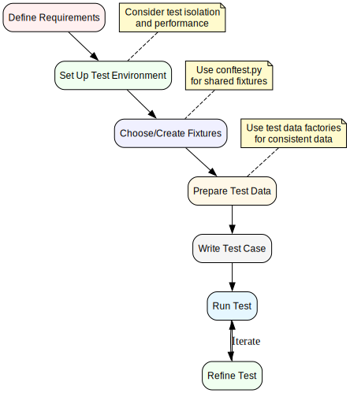

Writing Tests
This document provides guidance on writing effective tests using the ichrisbirch project testing infrastructure.
Test Organization
Tests in the project are organized by component and functionality:

Test Types
The project uses several types of tests:
- API Tests: Test API endpoints using FastAPI TestClient
- App Tests: Test Flask routes and views using FlaskClient
- Integration Tests: Test interactions between components
- Frontend Tests: Test UI interactions using Playwright
- Model Tests: Test model behavior and validation
- Unit Tests: Test individual functions and methods
Test File Naming
Test files follow a consistent naming pattern:
- API tests:
tests/ichrisbirch/api/endpoints/test_*.py - App tests:
tests/ichrisbirch/app/routes/test_*.py - Model tests:
tests/ichrisbirch/models/test_*.py - Utility tests:
tests/ichrisbirch/test_*.pyortests/utils/test_*.py - Script tests:
tests/scripts/test_*.py
Basic Test Structure
A typical test file includes:
- Import statements
- Test data fixture setup
- Individual test functions
- Helper functions (if needed)
Example:
import pytest
from fastapi import status
from tests.utils.database import delete_test_data
from tests.utils.database import insert_test_data
@pytest.fixture(autouse=True)
def insert_testing_data():
insert_test_data('events')
yield
delete_test_data('events')
def test_read_events(test_api_logged_in):
response = test_api_logged_in.get('/events/')
assert response.status_code == status.HTTP_200_OK
assert len(response.json()) > 0
def test_create_event(test_api_logged_in):
# Test implementation...
Testing API Endpoints
Basic API Test
def test_api_endpoint(test_api_logged_in):
response = test_api_logged_in.get('/endpoint/')
assert response.status_code == status.HTTP_200_OK
assert response.json() is not None
Testing CRUD Operations
The project includes a ApiCrudTester utility for testing CRUD operations:
from tests.ichrisbirch.api.endpoints.crud_test import ApiCrudTester
NEW_OBJ = schemas.EventCreate(
name='Event 4',
date=datetime(2022, 10, 4, 20, 0),
venue='Venue 4',
url='https://example.com/event4',
cost=40.0,
attending=False,
notes='Notes for Event 4',
)
ENDPOINT = '/events/'
crud_tests = ApiCrudTester(endpoint=ENDPOINT, new_obj=NEW_OBJ)
def test_read_one(test_api_logged_in):
crud_tests.test_read_one(test_api_logged_in)
def test_create(test_api_logged_in):
crud_tests.test_create(test_api_logged_in)
Testing App Routes
Basic App Test
def test_app_route(test_app_logged_in):
response = test_app_logged_in.get('/route/')
assert response.status_code == status.HTTP_200_OK
assert b'Expected Content' in response.data
Testing Form Submissions
def test_form_submission(test_app_logged_in):
form_data = {
'field1': 'value1',
'field2': 'value2',
'action': 'submit',
}
response = test_app_logged_in.post('/form-route/', data=form_data)
assert response.status_code == status.HTTP_200_OK
Testing Frontend with Playwright
def test_ui_interaction(page: Page):
page.get_by_label('name').fill('Test Event')
page.get_by_label('date').fill('2050-01-01')
page.click('css=button[value="add"]')
# Verify the result
expect(page).to_have_title('Events')
Testing Model Functions
def test_model_method(test_user):
result = test_user.validate_preferences(
key='preferences',
updated_preferences={'theme_color': 'blue'}
)
assert result is True # or appropriate assertion
Testing Authentication and Authorization
Testing with Different User Types
def test_admin_only_endpoint(test_api_logged_in_admin):
response = test_api_logged_in_admin.get('/admin-only/')
assert response.status_code == status.HTTP_200_OK
def test_admin_only_endpoint_unauthorized(test_api_logged_in):
response = test_api_logged_in.get('/admin-only/')
assert response.status_code == status.HTTP_401_UNAUTHORIZED
Parameterized Tests
Use pytest.mark.parametrize for testing multiple scenarios:
@pytest.mark.parametrize('category', list(TaskCategory))
def test_task_categories(test_api_logged_in, category):
test_task = schemas.TaskCreate(
name='Test Task',
notes='Test Notes',
category=category,
priority=3,
)
response = test_api_logged_in.post('/tasks/', json=test_task.model_dump())
assert response.status_code == status.HTTP_201_CREATED
Testing Error Cases
def test_invalid_input(test_api_logged_in):
invalid_data = {'incomplete': 'data'}
response = test_api_logged_in.post('/endpoint/', json=invalid_data)
assert response.status_code == status.HTTP_422_UNPROCESSABLE_ENTITY
Mocking External Dependencies
Use unittest.mock or pytest-mock to mock external dependencies:
@patch('httpx.get')
def test_external_api(mock_httpx_get, test_api_logged_in):
# Configure the mock
mock_response = MagicMock()
mock_response.status_code = 200
mock_response.json.return_value = {'key': 'value'}
mock_httpx_get.return_value = mock_response
# Test the function that uses httpx.get
response = test_api_logged_in.get('/endpoint-using-external-api/')
assert response.status_code == status.HTTP_200_OK
Testing Asynchronous Code
For testing async functions:
import pytest_asyncio
@pytest_asyncio.fixture
async def async_client():
# Setup async client...
yield client
# Teardown...
@pytest.mark.asyncio
async def test_async_function(async_client):
result = await async_function()
assert result == expected_value
Testing Database Interactions
def test_database_operation(test_api_logged_in):
# Create an entity
create_response = test_api_logged_in.post('/entity/', json={'name': 'Test'})
assert create_response.status_code == status.HTTP_201_CREATED
entity_id = create_response.json()['id']
# Verify it's in the database
get_response = test_api_logged_in.get(f'/entity/{entity_id}/')
assert get_response.status_code == status.HTTP_200_OK
assert get_response.json()['name'] == 'Test'
Best Practices
- Test one thing per test function: Each test should focus on a single behavior or condition
- Use descriptive test names: Test names should clearly describe what they're testing
- Minimize test dependencies: Avoid tests that depend on the outcome of other tests
- Clean up test data: Always clean up any data created during tests
- Use appropriate fixtures: Use the right scope for fixtures to optimize test performance
- Test edge cases: Include tests for boundary conditions and error cases
- Use assertions effectively: Make assertions specific and informative
- Avoid test logic: Keep conditional logic in tests to a minimum
- Keep tests fast: Optimize tests to run quickly
- Make tests deterministic: Tests should produce the same result on each run
Troubleshooting Common Test Issues
- Test data not available: Ensure you have the right data fixtures
- Authentication failures: Check that you're using the right test client
- Database errors: Verify that database transactions are being managed properly
- Flaky tests: Look for race conditions or external dependencies
- Slow tests: Consider using more focused fixtures or optimizing test logic